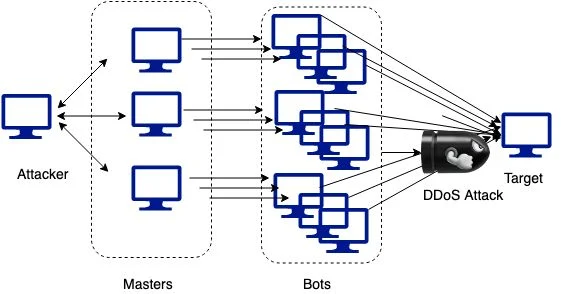
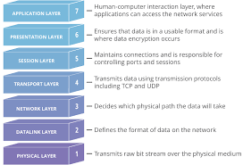
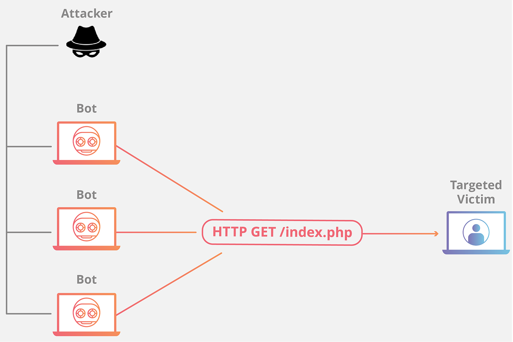
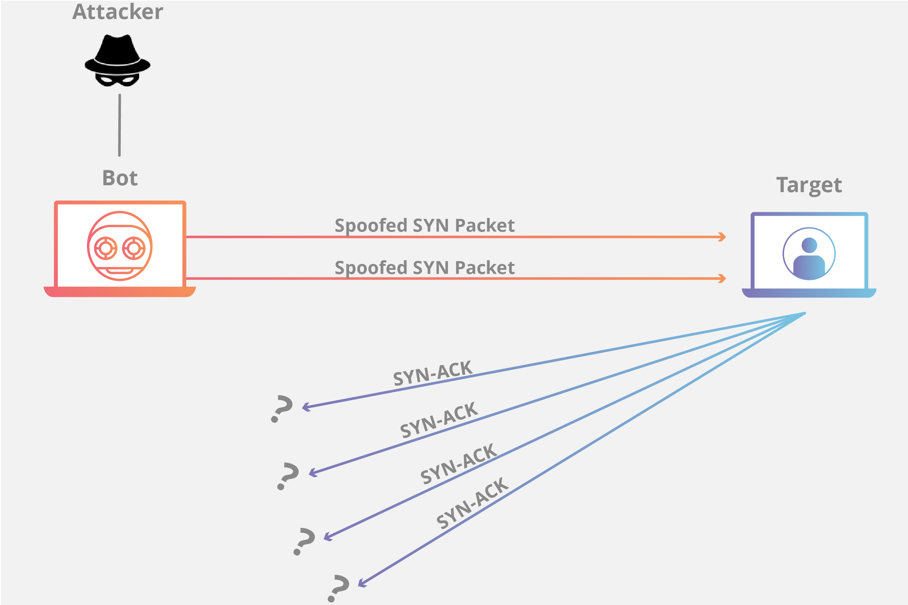
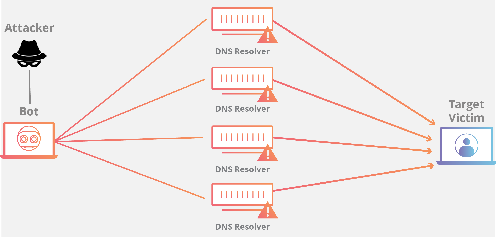

From a high level, a DDoS attack is like an unexpected traffic jam clogging up the highway, preventing regular traffic from arriving at its destination.
How does a DDoS attack work?
DDoS attacks are carried out with networks of Internet-connected machines.
These networks consist of computers and other devices (such as IoT devices)which have been infected with malware, allowing them to be controlled remotely by an attacker. These individual devices are referred to as bots (or zombies), and a group of bots is called a botnet.
Once a botnet has been established, the attacker is able to direct an attack by sending remote instructions to each bot.
When a victim's server or network is targeted by the botnet, each bot sends requests to the target's IP address, potentially causing the server or network to become overwhelmed, resulting in a denial-of-service to normal traffic.
Because each bot is a legitimate Internet device, separating the attack traffic from normal traffic can be difficult.

How to identify a DDoS attack
The most obvious symptom of a DDoS attack is a site or service suddenly becoming slow or unavailable. But since a number of causes - such a legitimate spike in traffic - can create similar performance issues, further investigation is usually required. Traffic analytics tools can help you spot some of these telltale signs of a DDoS attack:
- Suspicious amounts of traffic originating from a single IP address or IP range
- A flood of traffic from users who share a single behavioral profile, such as device type, geolocation, or web browser version
- An unexplained surge in requests to a single page or endpoint
- Odd traffic patterns such as spikes at odd hours of the day or patterns that appear to be unnatural
-
There are other, more specific signs of DDoS attack that can vary depending on the type of attack.

What are some common types of DDoS attacks?
Different types of DDoS attacks target varying components of a network connection. In order to understand how different DDoS attacks work, it is necessary to know how a network connection is made.
A network connection on the Internet is composed of many different components or "layers". Like building a house from the ground up, each layer in the model has a different purpose.
The OSI model, shown below, is a conceptual framework used to describe network connectivity in 7 distinct layers.
While nearly all DDoS attacks involve overwhelming a target device or network with traffic, attacks can be divided into three categories. An attacker may use one or more different attack vectors, or cycle attack vectors in response to counter measures taken by the target.

Application layer attacks
- The goal of the attack:
-
Sometimes referred to as a layer 7 DDoS attack (in reference to the 7th layer of the OSI model), the goal of these attacks is to exhaust the target's resources to create a denial-of-service.
The attacks target the layer where web pages are generated on the server and delivered in response to HTTP requests. A single HTTP request is computationally cheap to execute on the client side, but it can be expensive for the target server to respond to, as the server often loads multiple files and runs database queries in order to create a web page.
Layer 7 attacks are difficult to defend against, since it can be hard to differentiate malicious traffic from legitimate traffic.
Application layer attack example:
- HTTPS
-
- This attack is similar to pressing refresh in a web browser over and over on many different computers at once - large numbers of HTTP requests flood the server, resulting in denial-of-service.
- This type of attack ranges from simple to complex.
- Simpler implementations may access one URL with the same range of attacking IP addresses, referrers and user agents. Complex versions may use a large number of attacking IP addresses, and target random urls using random referrers and user agents.

Protocol attacks
- The goal of the attack:
-
Protocol attacks, also known as a state-exhaustion attacks, cause a service disruption by over-consuming server resources and/or the resources of network equipment like firewalls and load balancers.
Protocol attacks utilize weaknesses in layer 3 and layer 4 of the protocol stack to render the target inaccessible.
Protocol attack example:
- SYN flood
-
- A SYN Flood is analogous to a worker in a supply room receiving requests from the front of the store.
- The worker receives a request, goes and gets the package, and waits for confirmation before bringing the package out front. The worker then gets many more package requests without confirmation until they can't carry any more packages, become overwhelmed, and requests start going unanswered.
- This attack exploits the TCP handshake - the sequence of communications by which two computers initiate a network connection - by sending a target a large number of TCP "Initial Connection Request" SYN packets with spoofed source IP addresses.
- The target machine responds to each connection request and then waits for the final step in the handshake, which never occurs, exhausting the target's resources in the process.

Volumetric attacks
- The goal of the attack:
-
This category of attacks attempts to create congestion by consuming all available bandwidth between the target and the larger Internet. Large amounts of data are sent to a target by using a form of amplification or another means of creating massive traffic, such as requests from a botnet.
Amplification example:
- DNS Amplification
-
- A DNS amplification is like if someone were to call a restaurant and say "I'll have one of everything, please call me back and repeat my whole order," where the callback number actually belongs to the victim. With very little effort, a long response is generated and sent to the victim.
- By making a request to an open DNS server with a spoofed IP address (the IP address of the victim), the target IP address then receives a response from the server.
